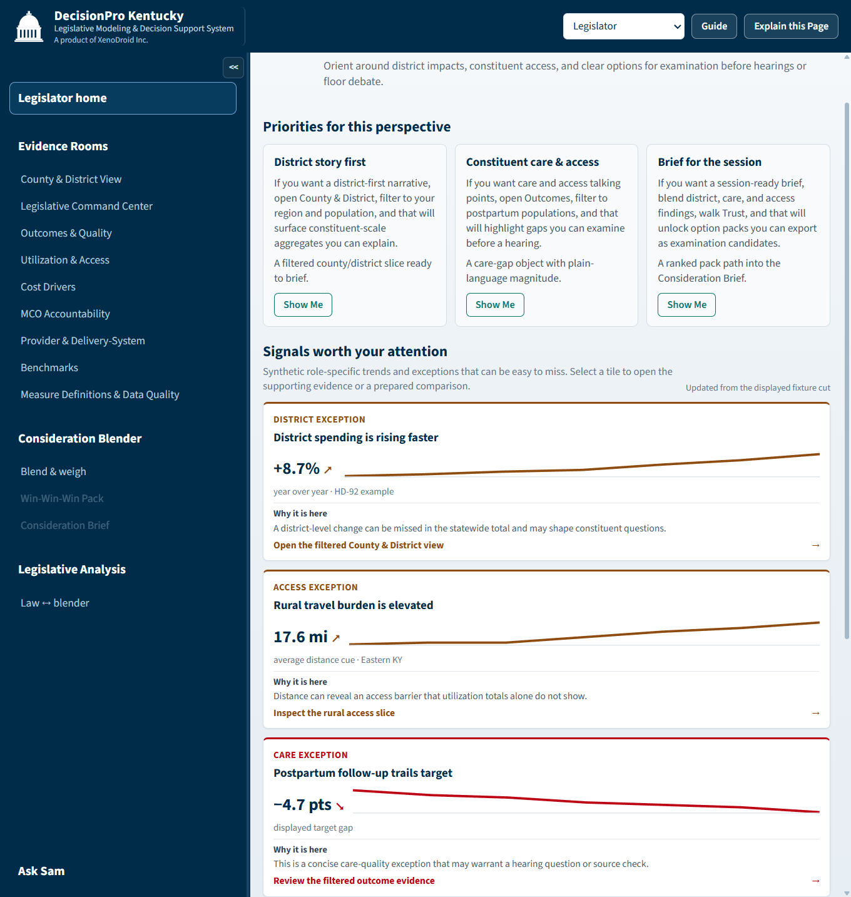
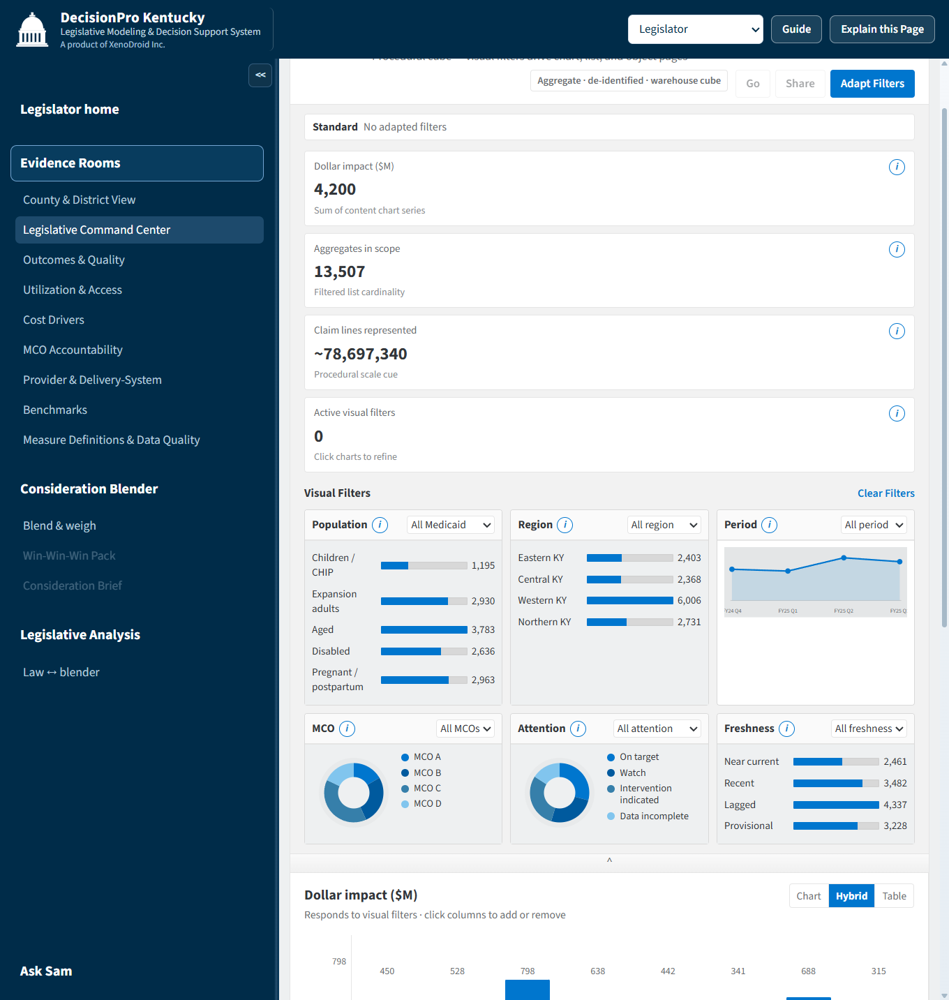
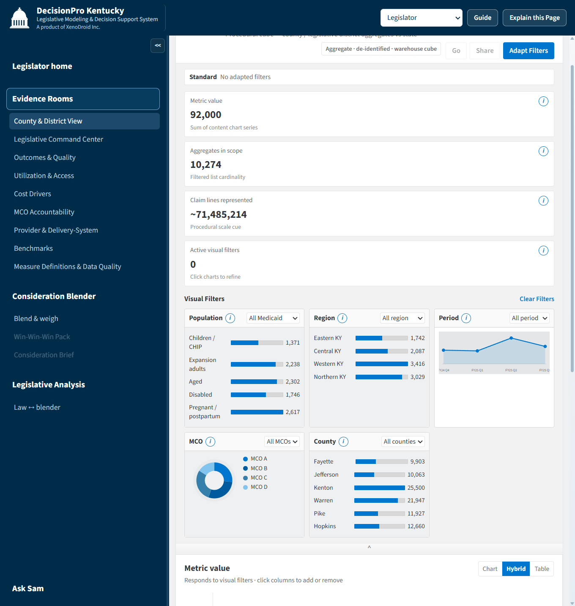
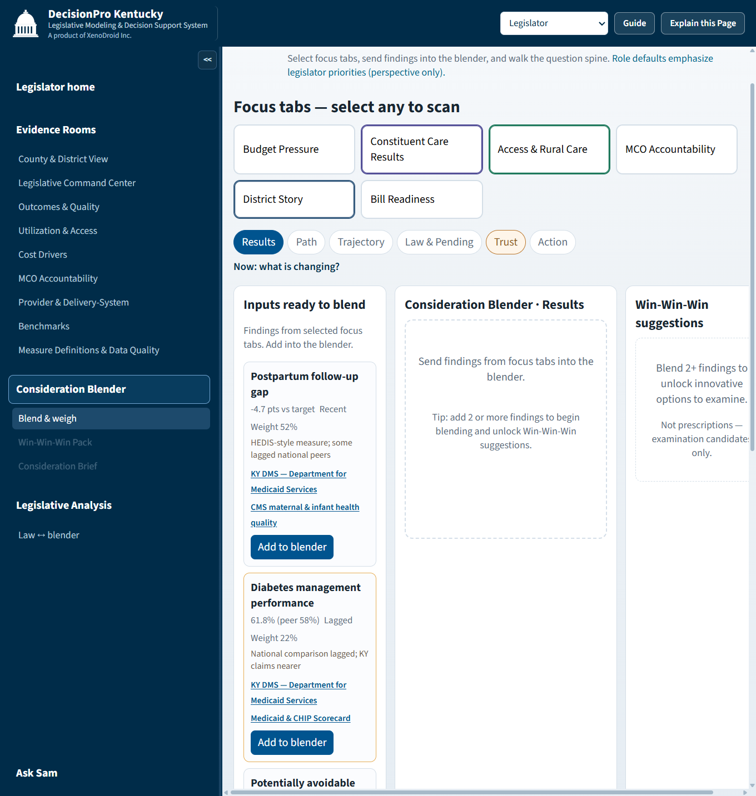
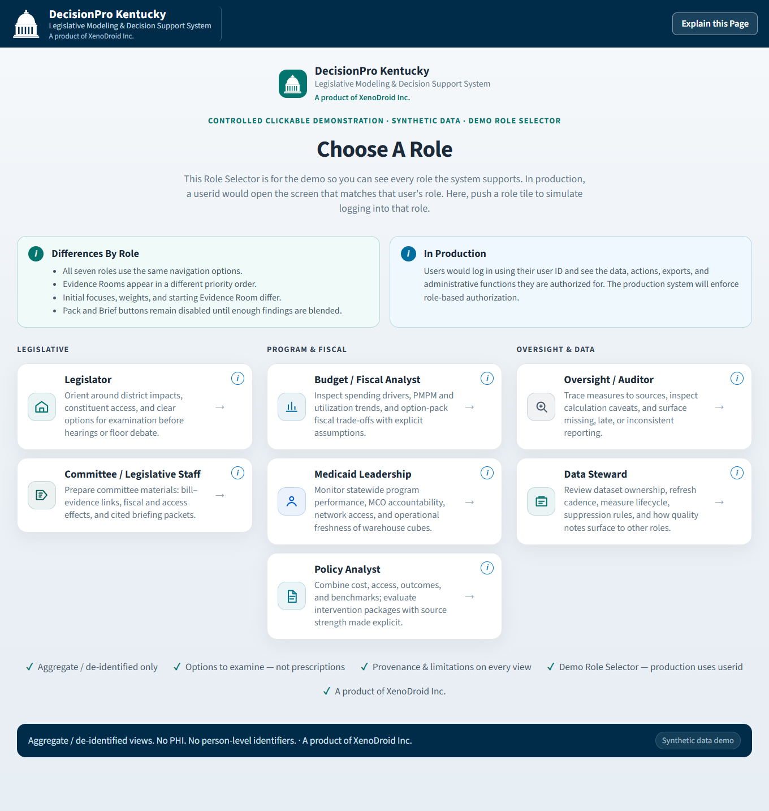

Typical dashboard
- Charts and KPIs for browsing
- One-size-fits-all landing view
- Equal presentation of every metric
- Stops at “here is the data”
Kentucky Medicaid · Legislative decision support
Put cost, access, outcomes, and district evidence at decision-makers’ fingertips — then weigh what matters for the question in front of them.
A product of XenoDroid Inc.
Transparency shows what happened. DecisionPro helps people examine what to do next — without prescribing legislation or replacing lawmaker judgment.
The system walks a practical path: orient by role, inspect the warehouse evidence that matters, blend and weigh competing concerns, then leave with options worth examining.
Screens from the live synthetic demo. Data is aggregate and de-identified by design — never person-level Medicaid records or PHI.




DecisionPro is built around the work of hearings, fiscal notes, oversight, and district questions — not around browsing charts for their own sake.
Cost drivers, utilization and access, outcomes, MCO accountability, providers, benchmarks, and measure definitions — filtered as one coherent cube.
Surface watch and intervention signals, then explain what changed, where, for whom, and why it matters for examination.
Blend findings across focuses with adjustable weights. Unlock option packs and briefs as examination candidates — never scored prescriptions.
In-product guidance and an assistant help people find the next useful view without memorizing the warehouse layout.
Navigation stays consistent; priorities, starting rooms, and default focus weights change with the role.

Legislative — district impacts, constituent access, hearing-ready options
Program & fiscal — spend drivers, PMPM, MCO performance, intervention packages
Oversight & data — provenance, freshness, suppression, measure lifecycle
Decision support only helps when people can see how strong the evidence is — and what it cannot claim.
Public demo uses synthetic fixtures only. The product model is de-identified legislative examination — never PHI or person-level Medicaid records.
Freshness, source ownership, suppression, confidence, and known limitations stay attached to findings, packs, and briefs.
DecisionPro proposes options to examine. Directors and lawmakers remain authoritative for policy meaning and acceptance.
Interactive · synthetic data · A product of XenoDroid Inc.